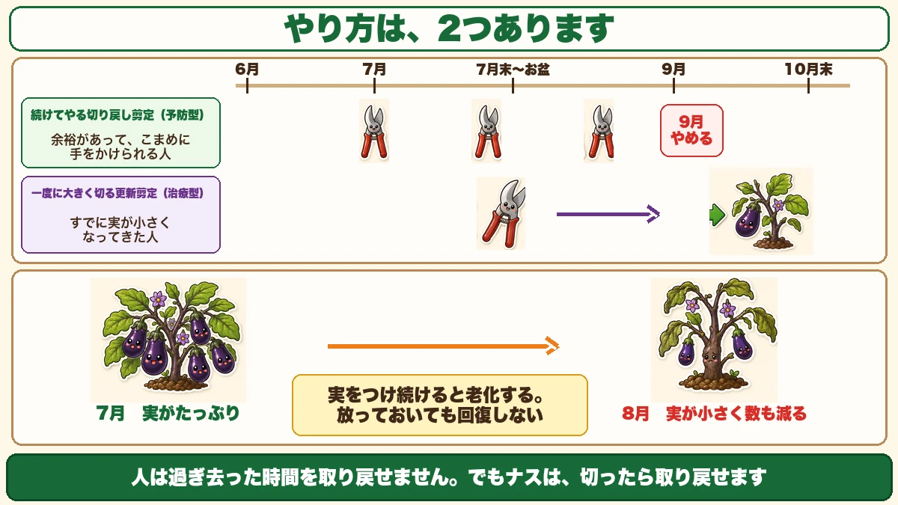
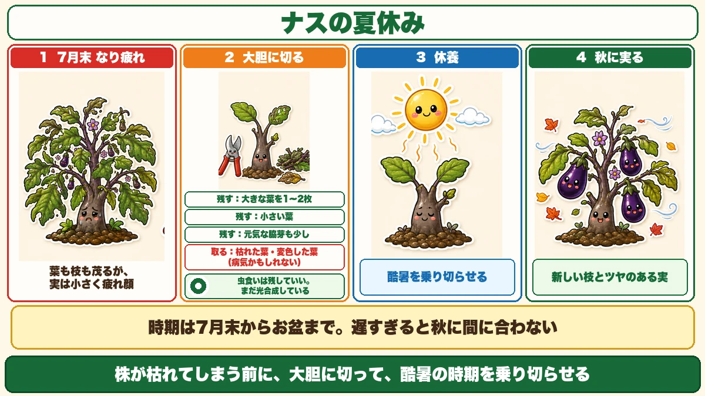
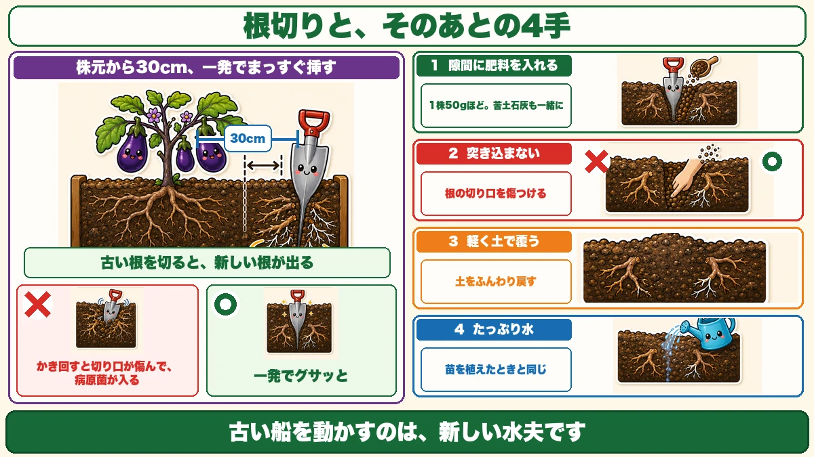
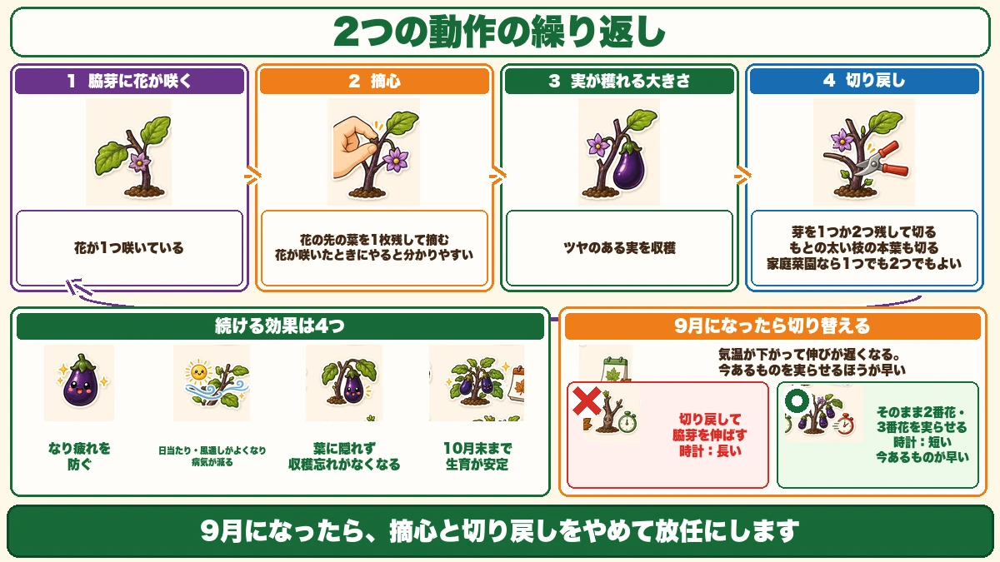

ナスの更新剪定と切り戻し｜なり疲れの見分け方・切る時期と量・根切りと追肥・秋ナスまで収穫するコツ
どうも、8150（えいこう）です🌱 家庭菜園歴8年、理科の教員免許を持っていて、有機・無農薬で野菜を育てています。
📖 この記事の目次
この記事で分かること
- 夏の暑さが続くと、ナスは実が小さくなったり、かたくなったり、花が落ちたりします。これを「なり疲れ」と言います。人で言えば夏バテです。
- ただ、実が小さくなる原因は、なり疲れだけではありません。水不足、肥料の過不足、虫の被害なども考えられます。切る前に、原因を見分けることが大切です。
- ナスの枝を切って株を若返らせる方法には、2つあります。収穫しながらこまめに切る「切り戻し」と、一度に大きく切って株を休ませる「更新剪定」です。
- 更新剪定は、7月中旬から8月上旬ごろに行うのが一般的です。株を休ませて、秋にまたおいしいナスを収穫するための作業です。
- 根を切る「根切り」と、そのあとの追肥とたっぷりの水を、セットで行うと効果的と言われます。
- ただし、更新剪定をすると、しばらく収穫が止まります。まずは1株だけ試してみるのもおすすめです。
ナスは、初夏から秋まで長く収穫できる、家庭菜園の人気者ですよね。焼きナス、麻婆ナス、漬けもの。夏の食卓に欠かせない野菜です。
でも、真夏になると、「最近、実が小さい」「つやがなくて、かたい」「花が咲いても実にならない」ということが起きてきます。せっかくここまで育ててきたのに、このまま終わってしまうのはもったいないですよね。
安心してください。ナスは、枝を切って休ませることで、秋にもう一度、つやのある実をつけてくれる野菜です。この記事では、なり疲れの見分け方から、切り戻しと更新剪定のやり方、根切りと追肥、秋の管理まで、順番に書いていきます。
早見：ナスの剪定の基本（ひと目で分かる目安）
なり疲れのサイン
- 実が小さい、形が悪い
- 実の皮がかたく、つやがない
- 花が咲いても、実にならずに落ちる
- 枝の先の伸びが弱い
2つの方法
- 切り戻し：収穫するたびに、枝をこまめに切って更新する。収穫を続けながらできる
- 更新剪定：一度に大きく枝を切って、株を休ませる。しばらく収穫が止まる
更新剪定の目安
- 時期：7月中旬から8月上旬ごろ（説明によって少し違う）
- 切る量：株の高さの半分くらい、葉の量で3分の1から2分の1くらい
- 実：全部とる
- 葉：元気な小さな葉や脇芽は残す。全部の葉を落とさない
- 根切り：株元から20〜30cmくらい離れたところに、スコップを差しこむ
- そのあと：追肥と、たっぷりの水
秋の管理
- 9月になったら、切り戻しをやめて、今ある枝に実をつけさせる、という説明
- 秋も切り戻しを続ける、という説明
（説明が分かれる）
ナスの1年の流れ
- 4月下旬〜5月：苗を植える。最初の実は小さいうちに摘んで、株の体づくりを優先
- 6月：収穫が始まる。3本仕立てにして、支柱で支える
- 7月：収穫の最盛期。切り戻しをしながら収穫を続ける
- 7月中旬〜8月上旬：なり疲れが出てきたら、更新剪定
- 8月下旬〜9月：更新剪定した株から、秋ナスの収穫が始まる
- 10月〜：気温が下がって実のつきが悪くなったら、片づける
更新剪定は、夏と秋のあいだの「夏休み」のような作業です。この流れの中で、どこで休ませるかを考えておくと、秋まで長く楽しめます。
3本仕立てと剪定
ナスは、主の枝（主枝）と、最初の花のすぐ下から出る勢いのある脇芽2本を残して、3本の枝で育てる「3本仕立て」が一般的です。
切り戻しも、更新剪定も、この3本の枝を基本にして行います。
- 切り戻し：3本の枝から出る脇芽に実をつけさせ、収穫のたびに切りもどす
- 更新剪定：3本の枝を、それぞれ半分くらいの高さまで切りつめる
3本の主な枝より下から出てくる脇芽は、早めにかきとっておくと、株の中がすっきりします。
作業の手順
ここからは、なり疲れの見分け方から、剪定、根切り、そのあとの管理まで、順番に書いていきます。
手順1：なり疲れか、ほかの原因かを見分ける
実が小さくなったり、かたくなったりする原因は、なり疲れだけではありません。切る前に、ほかの原因がないか確かめてください。
- 水不足：晴れが続いて土がからからに乾いていないか。乾燥していると、肥料をやっても溶け出さず、根が吸えない
- 肥料の過不足：肥料が足りないと実が小さくなる。一方で、肥料が多すぎても実がかたくなることがある
- 虫の被害：葉の裏にハダニやアブラムシがいないか。葉がかすれたように白っぽくなっていないか
- 実のとり遅れ：大きくなった実をつけたままにしていないか
水不足なら、たっぷり水をやるだけで回復することもあります。肥料不足かと思って、肥料をどんどん足すと、かえって実がかたくなることもあるので注意してください。
手順2：花を見て、株の元気さを確かめる
ナスの花は、株の元気さを教えてくれます。
花のまん中にある、めしべの長さを見てください。
- めしべが、まわりのおしべより長く、外に突き出している：株が元気なサイン
- めしべが、おしべより短く、中に隠れている：株が疲れている、または養分が足りていないサイン
ただし、めしべが短くなる原因は、肥料不足だけではありません。水不足や虫の被害でも、株が弱って、めしべが短くなることがあります。花のようすは、ほかのサインと合わせて見てください。

手順3：切り戻しか、更新剪定かを決める
ナスの剪定には、2つの方法があります。
- 切り戻し：収穫しながら、枝をこまめに切って、新しい枝に実をつけさせていく方法。収穫を止めずに、品質のいいナスを秋まで安定してとりたい方に向いています
- 更新剪定：一度に大きく枝を切って、株を休ませる方法。しばらく収穫は止まりますが、秋にまとめて収穫したい方や、食べきれないほどとれている方、病気が出てしまった株に向いています
どちらも必ずやらなければいけない作業ではありません。余裕があれば、やってみてください。
手順4：更新剪定の時期を決める
更新剪定は、夏の暑さで株が疲れ始めるころに行います。
- 7月中旬から下旬
- 7月中旬から8月上旬
- 7月末からお盆まで
と、説明によって少しずつ違います。地域や、その年の暑さによって変わるので、株のようすを見て決めてください。
ただ、あまり遅くなると、秋の収穫が始まるまでに時間がかかり、収穫できる期間が短くなります。お盆を過ぎてからでは遅い、と考えておくといいと思います。
手順5：実を全部とる
更新剪定をするときは、ついている実を全部とります。小さな実も、もったいないと思うかもしれませんが、全部とってください。とった実は、もちろん食べられます。
実が残っていると、株は実を育てることに力を使ってしまい、休むことができません。思いきって全部とることで、株はようやく休むことができるんです。

手順6：枝を切る
枝を切る量の目安は、次のとおりです。
- 高さで、だいたい半分くらいまで切りつめる
- 葉の量で、3分の1から2分の1くらいを減らす
主な枝（主枝と、そこから出た勢いのある枝）を、それぞれ切りつめます。3本仕立てにしている株なら、3本の枝をそれぞれ切りつめます。切る位置は、元気な脇芽や、小さな葉が残っている節の少し上にします。
切りすぎには注意してください。葉を全部落として、茎だけにしてしまうと、株が枯れてしまうことがあります。元気な脇芽や、小さな葉は残し、大きな葉も1〜2枚くらいは残しておくと、保険になります。
少しくらい虫に食べられた葉でも、緑色で元気なら、光合成をしてくれるので残してかまいません。枯れた葉や、病気が疑われる葉は、取り除きます。
手順7：根切りをする
根切りは、必須ではありませんが、更新剪定とセットで行うと効果的と言われます。
- 株元から20〜30cmくらい離れたところに、スコップをまっすぐ深く差しこむ
- 株のまわりを、ぐるりと1周するように、何か所かスコップを差す
- スコップは、まっすぐ入れて、まっすぐ抜く
古くなった根は、水や養分を吸う力が落ちていると言われます。根の一部を切ることで、そこから新しい根が出てきて、株が若返る、という考え方です。

ここで大事なのは、スコップでかき回さないことです。土をほじくり返すと、切った根の傷口を広げてしまい、病気の原因になることがあります。まっすぐ差して、まっすぐ抜くだけにしてください。
手順8：追肥をする
根切りのあとは、必ず追肥をします。新しく出てくる根に、すぐに養分を届けるためです。
- スコップを差してできたすき間に、肥料を入れる
- または、根切りをした線にそって、肥料をまいて、表面に浅く混ぜる
ここでも、深く突きこんだり、かき回したりはしないでください。表面に浅く混ぜるくらいで大丈夫です。肥料の量は、使う肥料の袋に書かれた目安に従って、まきすぎないようにします。
手順9：たっぷり水をやる
追肥をしたら、たっぷり水をやります。根切りをしたスコップの跡にそって、水を流しこむようにすると、土の奥まで水が届きます。
そのあとも、乾燥が続くようなら、こまめに水をやってください。特に、35度を超えるような猛暑日が続くときは、土が乾きすぎないように気をつけます。乾燥が進むと、株が回復する前に弱ってしまうことがあります。
ただし、土が湿っているのに水をやりすぎるのもよくありません。土の乾き具合を見て判断してください。
更新剪定のあとの管理（週ごとの目安）
- 剪定した日：追肥とたっぷりの水。株元にわらを敷く
- 1週目：土の乾き具合を見て、乾いていたら水をやる。新しい芽が出始めるのを待つ
- 2週目：新しい芽が伸びてくる。葉の裏や新芽の虫を見回る
- 3〜4週目：新しい枝に花が咲き始める。支柱への誘引をし直す
- 1か月後ごろ：実がつき始める。切り戻しをしながら収穫を再開
あくまで目安なので、株のようすを見ながら進めてください。
手順10：新しい芽を守る
更新剪定のあと、しばらくすると、切ったところから新しい芽が伸びてきます。この新しい芽は、やわらかくて、虫にとってもごちそうです。
- 新しい芽や葉の裏に、虫がついていないか見回る
- 特に、いちばん上の新しい芽（成長点）を食べられないように気をつける
せっかく出てきた新しい芽を虫に食べられてしまうと、更新剪定の効果が台無しになってしまいます。剪定のあとこそ、こまめな見回りが大切です。
手順11：秋の収穫を待つ
順調にいけば、更新剪定から1か月くらいで、新しい枝に花が咲き、実がつき始めます。新しい枝の先に、紫色のつぼみを見つけたときは、思わずうれしくなりますよ。気温が落ち着く秋のナスは、皮がやわらかく、みずみずしくて、とてもおいしいですよ。
剪定のときの道具
- 剪定ばさみ：よく切れるものを使う。切れ味が悪いと、切り口がつぶれて傷みやすい
- はさみの手入れ：病気の株を切ったはさみで、健康な株を切ると、病気がうつることがある。株ごとに、はさみを拭いておくと安心
剪定は、晴れた日の午前中に行うのがおすすめです。気温が上がりすぎる前の時間帯なら、作業する人にとっても楽です。真夏の作業になるので、帽子をかぶって、こまめな水分補給も忘れずにしてください。切り口が早く乾いて、病気が入りにくくなります。雨の日や、雨の直前は避けてください。
ハダニに注意
真夏の乾燥した時期は、ハダニが増えやすくなります。葉の裏に小さな虫がいたり、葉が白くかすれたようになっていたりしたら、ハダニのしわざかもしれません。
ハダニは水に弱いので、葉の裏に水をかけると減らすことができます。ただし、これは虫対策の水やりで、根に水を届けるための水やりとは別のものです。根への水は、株元や畝のあいだに、たっぷりやってください。
収穫の目安
ナスは、とり遅れると株が疲れやすくなる野菜です。少し小さめのうちにとるくらいが、株にとってはちょうどいいんですね。食べごろの大きさになったら、早めに収穫してください。
- 長ナス、中長ナス：長さ10〜15cmくらい（品種によって違う）
- 実に、つやがあるうちに
- へたの下の、とげに気をつけて、はさみで切る
夏の暑い時期は、実がすぐに大きくなります。2〜3日に1回は畑をのぞいて、こまめに収穫するのが、なり疲れを防ぐいちばんの近道です。
夏のナスの水やり
ナスは、水が大好きな野菜です。「ナスは水で育てる」と言われることもあるほどです。
- 晴れが続いて土が乾いたら、株元や畝のあいだにたっぷり水をやる
- 水やりは、朝の涼しいうちか、夕方に
- 株元にわらを敷いて、土の乾燥を防ぐ
水が足りないと、実がかたくなったり、つやがなくなったりします。なり疲れかな、と思ったら、まず水が足りているかを確かめてください。
追肥のタイミング
ナスは、長く実をつけ続けるので、肥料もたくさん使います。収穫が始まったら、2週間に1回くらいを目安に、少しずつ追肥を続ける方法がよく紹介されます。
ただ、肥料のやりすぎは、実がかたくなる原因にもなります。葉の色や、花のめしべの長さを見ながら、量を調整してください。
切り戻し剪定のやり方
更新剪定のように一度に大きく切るのではなく、収穫しながらこまめに枝を更新していく方法です。
2つの動作をくり返す
切り戻しは、難しそうに聞こえますが、実は次の2つの動作のくり返しです。
- 花が咲いたら：その花の先の葉を1枚（家庭菜園なら1〜2枚）残して、枝の先を摘む
- 実を収穫するとき：実のついた枝を、根元に近い脇芽を1つ残して切る
すると、残した脇芽が伸びて、また花をつけ、実がなります。これをくり返すことで、いつも若い枝に実をつけさせることができます。

家庭菜園なら、脇芽を2つ残してもいい
脇芽を1つだけ残すのが基本ですが、家庭菜園なら、2つ残しても大丈夫、という説明もあります。たくさん収穫したいときは、2つ残してみてください。
切り戻しのよさ
- 日当たりと風通しがよくなる
- 病気が出にくくなる
- いつも若い枝に実がつくので、品質のいいナスがとれる
- 株が疲れにくい
下葉や、元の枝の葉も整理する
新しく出た芽の葉が大きくなってきたら、元の太い枝の古い葉は切っておきます。株元の下葉や、黄色くなった葉も、随時取り除いてください。株の中がすっきりして、日当たりと風通しがよくなります。
もっと簡単なやり方
花が咲くたびに摘心するのが大変なら、1本の枝に実を2〜3個つけさせて、全部収穫し終えたら、脇芽を残して枝の先を切る、という簡単な方法もあります。1本の枝に4個以上つけると多すぎるので、3個くらいまでにしておくといい、という説明もあります。
品種による違い
ナスには、いろいろな品種があります。
- 長ナス、中長ナス：一般的なナス。更新剪定や切り戻しがしやすい
- 丸ナス：実が丸く、大きくなる。実をつけすぎると株が疲れやすいので、実の数をしぼる
- 米ナス：大きな実をつける。1本の枝にたくさん実をつけすぎないように
- 小ナス：小さな実をたくさんつける。こまめに収穫する
大きな実をつける品種ほど、株の負担が大きくなります。実を大きくしすぎないように、早めに収穫することも、なり疲れを防ぐ工夫の一つです。
プランターのナスの剪定
プランターでも、切り戻しや更新剪定はできます。
- プランターは土の量が少ないので、根切りは無理にしなくてもいい
- 更新剪定のあとは、プランターの土の表面に追肥をして、たっぷり水をやる
- プランターは乾きやすいので、剪定のあとは特に水切れに注意する
プランターのナスは、畑より株が小さくなりがちなので、切りすぎには特に気をつけてください。
剪定前の最終チェック
更新剪定をする前に、次のことを確かめておくと安心です。
- 株元がぐらついていないか、根元に病気が出ていないか
- 新しく伸びそうな元気な脇芽が残っているか
- 剪定のあと、水やりを続けられるか（旅行などの予定がないか）
- 天気予報で、晴れが続きそうか
剪定のあと1〜2週間は、株の回復にとって大事な時期です。そのあいだ、水やりや見回りができる日程を選んで行ってください。
失敗の見分け方
更新剪定のあと、株が枯れた
- 切りすぎて、葉がほとんど残らなかった
- 根切りのときに、かき回して根を傷めた
- 剪定のあと、乾燥させてしまった
- もともと病気にかかっていた
更新剪定のあと、なかなか新しい芽が出ない
- 時期が遅すぎた
- 水や肥料が足りなかった
- 暑さが厳しすぎた
少し時間がかかることもあるので、水を切らさずにようすを見てください。
新しい芽が、虫に食べられた
剪定のあとの新しい芽は、虫にとってごちそうです。こまめに見回って、虫を見つけたら取り除いてください。
実につやがない、曲がる
実につやがなく、表面がぼんやりした色になることがあります。水不足や、株の疲れが原因のことが多いです。実が曲がったり、形がいびつになったりするのも、株が疲れているサインのことがあります。水やりと追肥を見直し、それでも戻らなければ、切り戻しや更新剪定を考えてください。
実がかたい
肥料が多すぎても、実がかたくなることがあります。株が弱っているからといって、肥料を足しすぎないように気をつけてください。水不足でも、実がかたくなることがあります。
正直に言うと、こわい作業です
デメリットもある
更新剪定は、せっかく育った枝や葉を、一度にたくさん切ってしまう作業です。
- 切ってから、また収穫できるまで、時間がかかる
- そのあいだ、収穫量が一時的に落ちこむ
- 切りすぎると、株が枯れることもある
- 休ませるぶん、1年を通した収穫量が減ることもある
「秋にまたとれるようになる」ことと、「1年の収穫量が必ず増える」ことは、別の話です。
まずは1株だけ、試してみる
こわいなと思ったら、まずは1株だけ、更新剪定を試してみてはいかがでしょうか。やってみると、意外と簡単にできることが分かります。
ほかの株は、切り戻しを続けたり、そのまま育てたりして、秋に比べてみるのもおもしろいと思います。同じ品種、同じ畑で育てた株でも、手入れのしかたで秋の実のつき方がどう変わるのか。自分の目で確かめられるのは、家庭菜園ならではの楽しみですね。比べた結果をメモしておけば、来年の夏にきっと役立ちます。
株によっては、片づけて次の野菜へ
花のつきや、育ち方がかなり悪い株は、無理に更新剪定をせず、片づけて秋冬野菜に切りかえる、という選択もあります。病気で弱っている株は、剪定しても回復しないことがあります。秋まで続ける株と、片づける株を分けて考えてください。
説明が分かれていること
剪定は、必須か、余裕があればか
- 秋ナスまで長く収穫を楽しみたいなら、切り戻しは避けて通れない、という説明
- 必ずやらなければいけないことではない。余裕があればやってみて、という説明
どちらも、「秋まで長く収穫したいなら、やったほうがいい」という点では共通しています。
更新剪定の時期
- 7月中旬から下旬
- 7月中旬から8月上旬
- 7月末からお盆まで
地域や、その年の暑さで変わります。株が疲れ始めたら、早めに、と考えてください。
一度に大きく切るか、何回かに分けるか
- 一度に大胆に切り戻して、株を休ませる、という方法
- 暑い時期に一度にたくさん葉を減らすのは負担が大きいので、何回かに分けて切る、という方法
株の元気さと、暑さで選んでください。株が弱っているなら、分けて切るほうが安全です。
根切りの距離
- 株元から20cmくらい
- 株元から30cmくらい
どちらの説明も、株のまわりをぐるりと切る、という点では共通しています。株の大きさに合わせて、根鉢を大きく傷つけない距離で行ってください。
9月になったら、切り戻しをやめるか、続けるか
- 9月になったら、新しい脇芽の伸びが遅くなるので、切り戻しをやめて、今ある枝に2番目、3番目の実をつけさせたほうがいい、という説明
- 秋も切り戻しを続けて、実を大きくしすぎないようにして、長く収穫する、という説明
どちらの方法でも、混みあった枝は整理する、実を大きくしすぎない、という点は共通しています。
秋の追肥
- 夏に追肥していない株なら、秋にも追肥をする、という説明
- 次に植える野菜のことや、肥料の残りを考えて、むやみに追肥しない、という説明
株のようすと、次の作付けの予定で決めてください。
よくある質問
Q. 更新剪定のあと、どれくらいで収穫できますか？
A. 天気や株の状態にもよりますが、1か月くらいで新しい枝に実がつき始めることが多いです。ただ、何日で回復するという決まった日数はありません。新しい芽が元気に伸びているかを見ながら、待ってください。
Q. ピーマンやししとうも、更新剪定できますか？
A. ピーマンやししとうも、混みあった枝を整理して、株を若返らせることはできます。ただ、ナスほど大きく切り戻すことは少なく、混みあった枝や古い枝を整理する程度にすることが多いです。
Q. 根切りをすると、株が倒れませんか？
A. 根切りは、株のまわりの一部の根を切るだけなので、支柱でしっかり支えていれば、倒れることはほとんどありません。根切りのあとは、支柱の結び目も確かめておくと安心です。
Q. 更新剪定のあとの肥料は、何を使えばいいですか？
A. ふだん使っている肥料で大丈夫です。化成肥料なら早く効き、有機の肥料はゆっくり効きます。量は、袋に書かれた追肥の目安に従ってください。まきすぎると、かえって実がかたくなることがあります。
Q. 更新剪定のあと、支柱はどうすればいいですか？
A. 枝を短く切ったぶん、支柱の上のほうは使わなくなりますが、支柱はそのまま残しておいてください。新しく伸びてくる枝を、また支柱に誘引していきます。剪定のときに、古い結び目が茎に食いこんでいないかも確かめて、きつければゆるめておきましょう。
Q. 秋ナスは、いつまで収穫できますか？
A. 地域や天気によりますが、気温が下がって、実のつきや育ちが悪くなってきたら、そろそろ終わりのサインです。10月ごろまで収穫できることが多いです。最後に残った小さな実も、炒めものや漬けものにして、おいしく食べきってください。
Q. 更新剪定は、毎年やったほうがいいですか？
A. その年の暑さや、株の元気さによって決めればいいと思います。夏の暑さが厳しく、なり疲れが目立つ年はやってみる、株が元気なら切り戻しだけで続ける、というように、株のようすで判断してください。毎年記録をつけておくと、自分の畑に合ったやり方が見えてきます。
Q. 根切りは、スコップがないとできませんか？
A. 根切りには、刃の平たいスコップが使いやすいです。移植ごてのような小さな道具では、深くまで差しこめず、根がうまく切れないことがあります。スコップがない場合は、根切りはせずに、枝の剪定と、追肥、水やりだけでもかまいません。根切りは必須の作業ではありません。
Q. 剪定したあと、ナスの葉がしおれてきました
A. 剪定や根切りのあと、一時的に葉がしおれることがあります。株が新しい環境に慣れるまでのあいだなので、水を切らさないようにして、ようすを見てください。夕方や翌朝に元に戻っていれば大丈夫です。何日もしおれたままなら、切りすぎたか、根を傷めすぎた可能性があります。
Q. 切り戻しと更新剪定、両方やってもいいですか？
A. できます。初夏から収穫しながら切り戻しを続けて、真夏に株が疲れてきたら更新剪定で一度休ませる、という組み合わせもあります。ただ、更新剪定をすると、しばらく収穫が止まるので、切り戻しで株が元気に保てているなら、更新剪定はしなくても大丈夫です。
Q. 何株か植えている場合、全部同じ日に更新剪定したほうがいいですか？
A. 全部を同じ日に切ると、そのあいだ収穫がまったくなくなってしまいます。何株かあるなら、株ごとに日をずらして切ったり、1株だけ更新剪定して、ほかの株は切り戻しを続けたりすると、収穫を途切れさせずにすみます。
Q. 更新剪定をしたあと、雨が続きました
A. 雨が続くと、切り口から病気が入りやすくなることがあります。剪定は、できれば晴れが続く日を選んで行ってください。剪定のあとに雨が続いた場合は、切り口や新しい芽に病気が出ていないか、よく見ておきましょう。雨のあいだは、水やりは控えてください。
Q. 病気の株も、更新剪定で回復しますか？
A. 病気の種類や進み具合によります。葉の一部に病気が出ているくらいなら、その部分を切り取ることで、新しい葉が元気に育つこともあります。ただし、株全体がしおれて、水をやっても戻らないような場合は、根の病気の可能性もあり、剪定しても回復しないことがあります。そういう株は、無理に残さず片づけて、ほかの株に病気が広がらないようにしてください。
Q. 更新剪定をしなかった株は、どうなりますか？
A. 更新剪定をしなくても、ナスは秋まで実をつけることが多いです。ただ、なり疲れが進むと、実が小さく、かたくなりやすくなります。切り戻しをこまめに続けたり、水と追肥で株の元気を保ったりすることで、秋まで収穫を続けることもできます。
Q. 切った枝は、どうすればいいですか？
A. 病気が出ていない枝や葉は、細かくしてたい肥の材料にできます。病気が出ていた枝や葉は、たい肥にせず、畑の外に持ち出して処分してください。
Q. 葉が少なくなって、日焼けしないか心配です
A. 葉を切りすぎると、残った枝や実が強い日差しにさらされることがあります。元気な葉を何枚か残しておくと、日よけにもなります。株元にわらを敷いて、土の乾燥と温度の上がりすぎを防ぐのもおすすめです。
学ぶ🔬 なぜナスは、切ると若返るのか
ここからは、ナスの剪定のしくみについて、少しだけ深く書いておきます。読み飛ばしても大丈夫です。
実をつけ続けると、株は疲れる
野菜は、実の中の種を育てるために、たくさんの栄養を実に送ります。ナスは、初夏から次々に実をつけるので、夏が近づくころには、株の体力がかなり消耗しています。
そこへ真夏の暑さが加わると、株は弱って、実を大きく育てる力がなくなっていきます。これが、なり疲れです。
ナスは、脇芽から新しい枝を出す力が強い
ナスは、枝を切っても、そこから新しい脇芽を出して、再び枝を伸ばす力が強い野菜です。この力を利用して、古くなった枝を切り、新しい枝に実をつけさせるのが、剪定の考え方です。
新しい根が、水と養分を吸う
根も、時間がたつと古くなって、水や養分を吸う力が落ちていくと言われます。根切りをすると、切ったところから新しい根が出てきます。新しい根は、水や養分をよく吸うので、株全体が元気を取り戻しやすくなります。
葉の数と、実の大きさ
ナスの実を大きく育てるのは、葉で作られた栄養です。1つの実を育てるのに、何枚かの葉が必要だと言われます。
葉が少なすぎると、実に送る栄養が足りなくなります。切り戻しで、花の先の葉を1〜2枚残すのは、その葉が、すぐ近くの実を育てるための「専属の工場」になるからです。更新剪定で葉を全部落とさないのも、株が回復するための栄養を作る葉を残すためなんですね。
なぜ実を大きくしすぎないほうがいいのか
ナスの実は、大きくなればなるほど、中の種も育っていきます。種を育てるには、たくさんの栄養が必要です。
実を大きくしすぎると、株は種を育てることに力を使って、新しい花や実をつける力が弱くなります。食べごろの大きさで早めに収穫することは、株の体力を守り、なり疲れを防ぐことにもつながります。
ナスは、なぜ水が好きなのか
ナスは、大きな葉をたくさん広げて、そこから水分をどんどん外へ出しています。実もみずみずしく、水分をたっぷり含んでいます。
そのため、ほかの夏野菜に比べても、たくさんの水を必要とします。水が足りないと、まず実の育ちが悪くなり、皮がかたくなったり、つやがなくなったりします。ナスの元気を保つには、水やりがとても大切なんです。
なぜ、かき回すと病気になりやすいのか
根切りのときにスコップでかき回すと、切った根の傷口が広がり、土の中の病気のもとが入りやすくなります。また、根がたくさん傷つくと、株が水を吸えなくなって、急に弱ってしまうこともあります。
まっすぐ差して、まっすぐ抜く。根切りは、必要なところだけを、きれいに切ることが大切です。切り口がきれいなほど、そこから新しい根が出やすくなります。
なぜ秋のナスはおいしいのか
秋になって気温が落ち着くと、ナスはゆっくりと実を育てるようになります。ゆっくり育った実は、皮がやわらかく、実がしまって、みずみずしくなります。夜の気温が下がると、昼に作った栄養を実にたくわえやすくなる、とも言われます。
「秋なすは嫁に食わすな」ということわざがあるほど、秋のナスはおいしいものとして知られてきました。更新剪定は、この秋のおいしいナスを味わうための作業なんですね。
まとめ
ここまで読んでくださって、ありがとうございます！
ナスの更新剪定と切り戻しのポイントを、もう一度まとめておきます。
- 夏に実が小さく、かたくなるのは、なり疲れのことが多い。ただし水不足、肥料の過不足、虫も疑う
- 花のめしべの長さで、株の元気さを見る
- 切り戻しは、収穫しながらこまめに。更新剪定は、一度に大きく切って休ませる
- 更新剪定は7月中旬から8月上旬ごろ。実を全部とり、高さの半分くらいまで切る
- 葉を全部落とさない。元気な脇芽や小さな葉は残す
- 根切りは、株元から20〜30cmにまっすぐスコップを。かき回さない
- 根切りのあとは、追肥とたっぷりの水
- 新しい芽を虫から守る
- こわいなら、まずは1株だけ試してみる
夏の暑さで弱ったナスも、ひと手間かけてあげれば、秋にまたおいしい実をつけてくれます。切るのは勇気がいりますが、思いきって休ませた株が、秋にまたつやのある実をつけたときは、とてもうれしいものです。夏の暑さを乗り越えた株への、ごほうびのような収穫です。秋のナスは、焼いても煮ても、とろりとやわらかくて格別ですよ。
まずは、次に畑に行ったとき、ナスの花をそっとのぞいて、めしべの長さを確かめるところから始めてみてください。株の元気さが、花から見えてきます🍆
剪定ばさみ
太い枝を切るので、切れ味が要ります。切り口がつぶれると、そこから傷みます。


移植ごて
根切りに使います。株元から30cmのところへ、まっすぐ差し込むだけ。

発酵油かす
切ったあとの追肥です。ここを飛ばすと、秋に戻ってきません。
![[商品価格に関しましては、リンクが作成された時点と現時点で情報が変更されている場合がございます。]](https://hbb.afl.rakuten.co.jp/hgb/55e75fe5.20db4cd1.55e75fe7.d1ec32cc/?me_id=1194164&item_id=10000908&pc=https%3A%2F%2Fthumbnail.image.rakuten.co.jp%2F%400_mall%2Fgardening%2Fcabinet%2Fhiryousennyouhiryo%2Fomakase-1.jpg%3F_ex%3D240x240&s=240x240&t=picttext "[商品価格に関しましては、リンクが作成された時点と現時点で情報が変更されている場合がございます。]")
苦土石灰
この時期はマグネシウムとカルシウムが不足します。追肥と一緒に。
![[商品価格に関しましては、リンクが作成された時点と現時点で情報が変更されている場合がございます。]](https://hbb.afl.rakuten.co.jp/hgb/55e75fe5.20db4cd1.55e75fe7.d1ec32cc/?me_id=1194164&item_id=10000709&pc=https%3A%2F%2Fthumbnail.image.rakuten.co.jp%2F%400_mall%2Fgardening%2Fcabinet%2Fikou_20091001_001%2Fimg1043676078.jpg%3F_ex%3D240x240&s=240x240&t=picttext "[商品価格に関しましては、リンクが作成された時点と現時点で情報が変更されている場合がございます。]")
あわせて読みたい